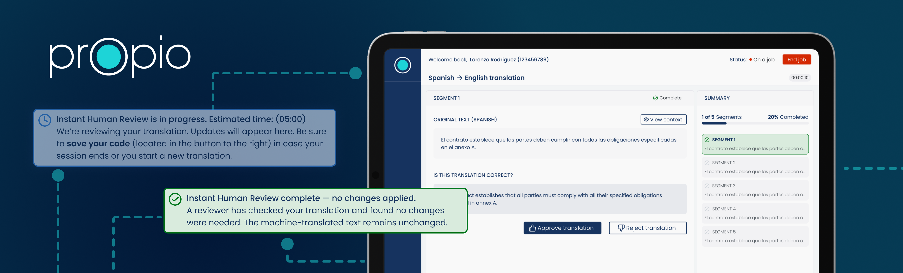
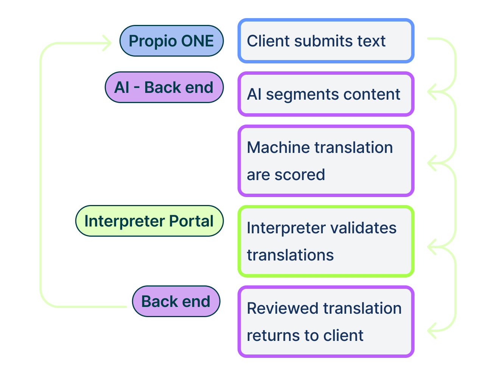
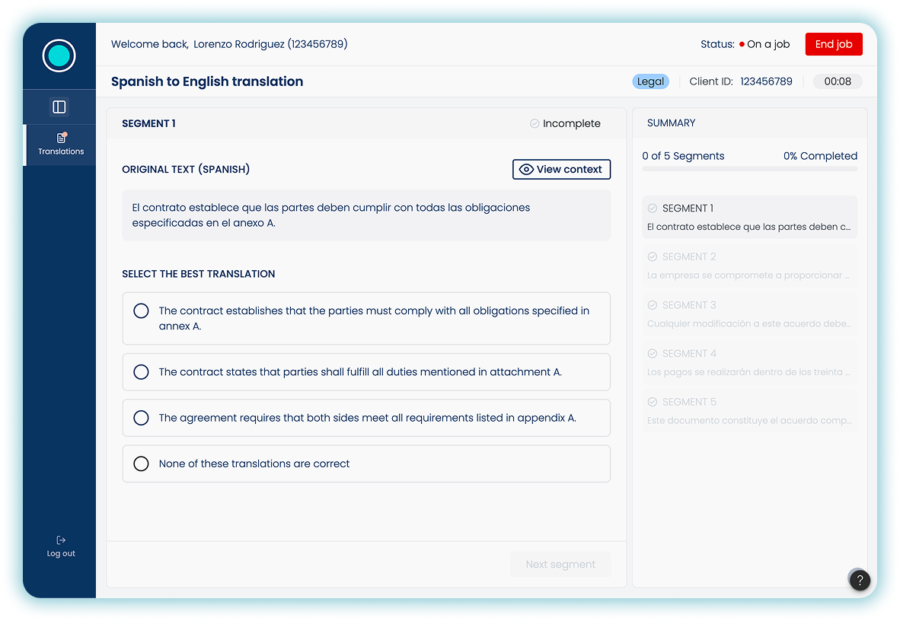
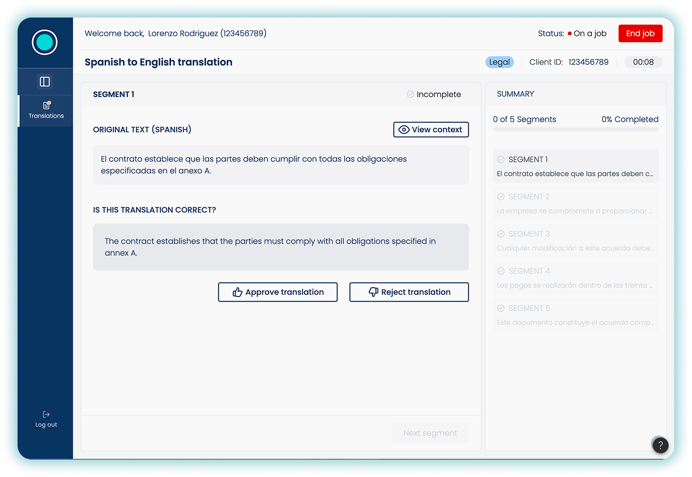
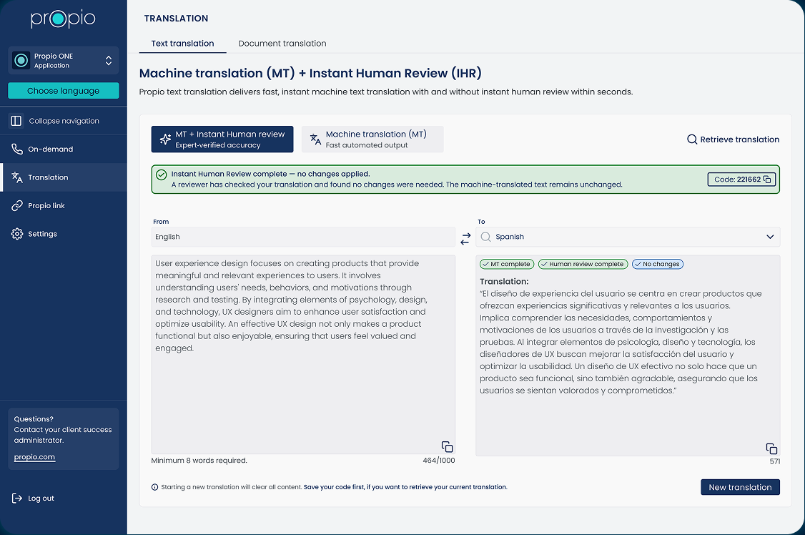
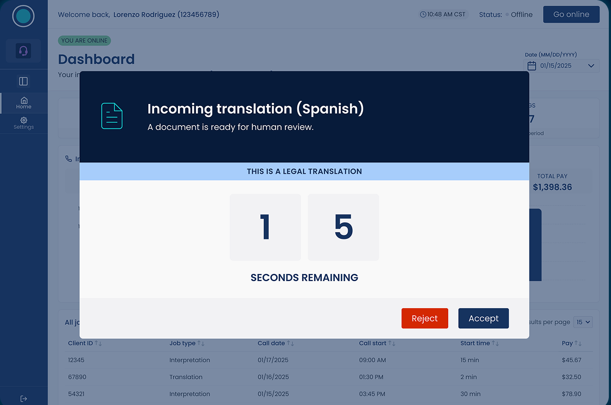
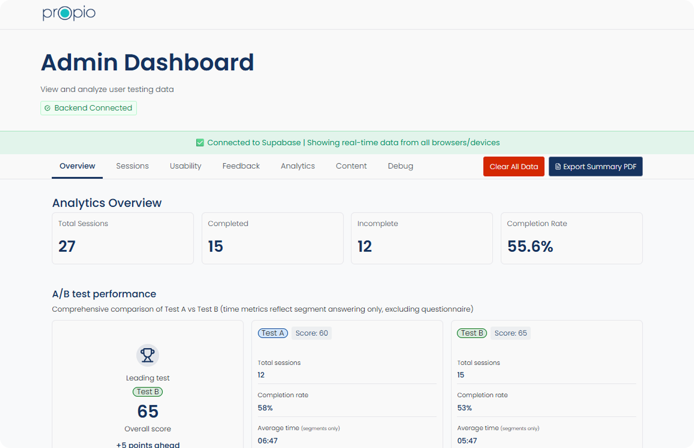
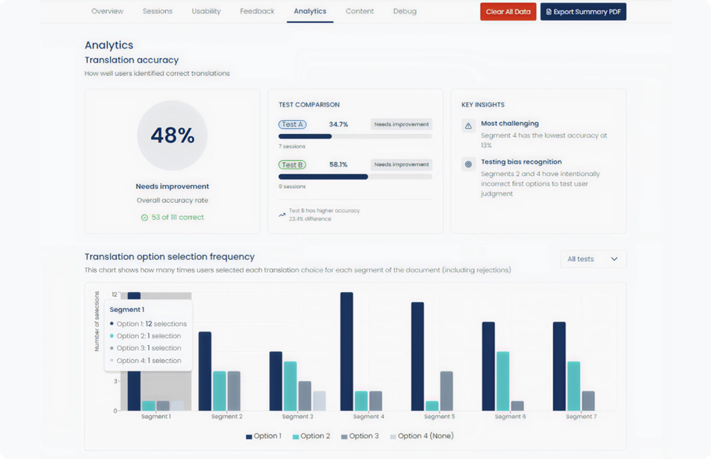
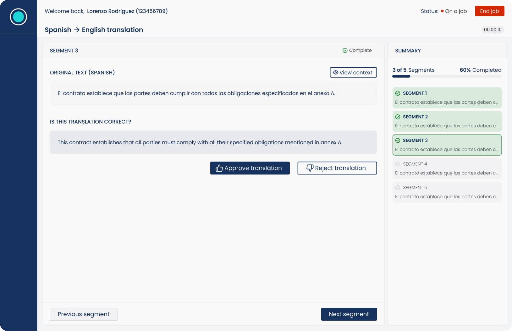
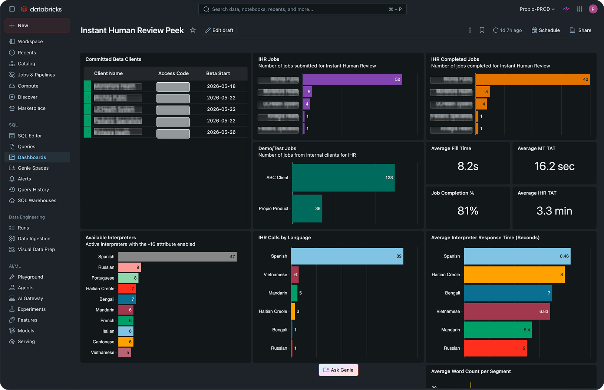

01
Compliance required human review
Clients in regulated industries needed translation workflows that could satisfy compliance requirements, but traditional human translation often took hours or days.

A market-first Propio initiative that combines machine translation with certified human review, reducing turnaround from days to minutes for high-stakes translation needs across healthcare, legal, education, and other regulated industries. The product is now in beta with real Propio clients.
Design Challenge
01
Clients in regulated industries needed translation workflows that could satisfy compliance requirements, but traditional human translation often took hours or days.
02
For healthcare clients, ACA Section 1557 made qualified human validation necessary when machine translation supported critical or technical content.
03
Propio had a large interpreter network, but the product needed a way for certified reviewers to validate AI-generated segments quickly and consistently.
Key Product Decisions
Human-in-the-loop model

Decision 01
The product positioned interpreters as expert validators. AI handled segmentation and translation generation, while humans made the final quality decision before content reached the client.


Decision 02
The biggest product question was how interpreters should review AI-generated content. I designed and built an internal testing platform so the team could compare two review models with real behavioral data.


Decision 03
Propio ONE and the Interpreter Portal already existed as separate applications, owned by different product and engineering teams. My work was to define how those systems should communicate so a client request, AI-generated translation, interpreter review, status updates, and final delivery could move through one reliable service. The challenge was not just the interface; it was aligning many moving parts into a clear, end-to-end product experience.

Captured live sessions, completion rate, A/B performance, usability feedback, and exportable summaries.

Measured how reviewers selected translation options across segments so workflow decisions were based on behavior.

The approve-or-reject model reduced decision effort while keeping interpreters responsible for final validation.

After beta launch, operational dashboards tracked real client usage, job volume, completion rate, language demand, and interpreter response time.
Experimentation & Validation
The Interpreter Portal concept began as a fully interactive Figma Make prototype for a company-wide innovation hackathon, where it won first place and secured support for further investment. Instead of moving directly into engineering, I proposed validating the review model first.
I designed and built an internal A/B testing platform that captured completion time, segment-level behavior, translation accuracy, usability scores, qualitative feedback, and PDF summaries. This let the team choose the production workflow based on user behavior rather than stakeholder preference.
Production Rollout
After validation, I designed the production experience using the Propio design system: pixel-ready UI, reusable component patterns, interaction specs, edge cases, responsive behaviors, developer annotations, and end-to-end user flows.
The product shipped into beta with Propio clients across healthcare, education, and public service contexts, including Wichita Public, Montefiore Health, UCHealth System, Pediatric Specialists, and Kintegra Health. Review workflows supported Spanish, Vietnamese, Mandarin, Haitian Creole, Bengali, and Russian.
Human review jobs completed during early beta.
Average interpreter connection time.
Average human review turnaround in production dashboards.
Reflection
The strongest lesson was not how to design an AI product; it was how to design the relationship between AI and people. By letting AI generate translations and positioning interpreters as expert validators, the workflow delivered automation speed with the trust high-stakes communication requires.
The best AI experiences do not remove humans from the workflow. They amplify human expertise where it matters most.
I’m happy to walk through the full design process and decisions behind the product.
Contact me